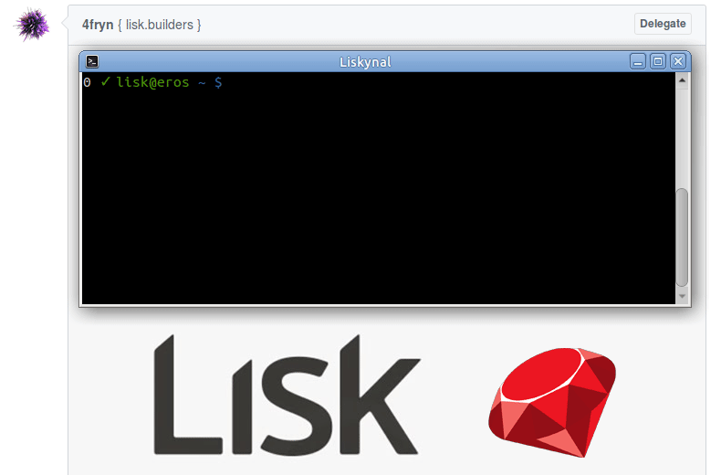

Lisk.rb¶ ↑
A simple Ruby wrapper for the Lisk API. 💎

Note before using¶ ↑
This is very early work-in-progress. The idea is to publish this
gem as soon as it is fully compatible with Lisk Core 1.0.0, which, however, is not released yet.
The current implementation of the lisk.rb gem is pure minimal by design and
barely allows checking the node status.
API Implemententation Status:
Installation¶ ↑
Add this line to your application's Gemfile:
gem 'lisk'
And then execute:
$ bundle
Or install it yourself as:
$ gem install lisk
Usage¶ ↑
Make sure to include lisk.rb in your scripts.
require 'lisk'
To get started, point the lisk.rb to any Lisk-API endpoint. By default, lisk.rb assumes a running Lisk testnet node on localhost port 7000.
node = Lisk::Client.new "127.0.0.1", 7000
For convenience, check if the Lisk node is connected, fully synchronized, and active by pinging it.
if node.is_alive? # only do stuff if client is connected, fully synchronized, and active ... end
Get access to the Lisk-0.8.0 legacy API (see #4).
lisk = Lisk::API.new node
Get the version of the connected Lisk node.
version = lisk.get_version build = lisk.get_version_build p "Lisk node version #{version} build #{build}..."
Get the status of the connected Lisk node.
connected = node.is_alive? loaded = lisk.is_chain_loaded? p "Lisk node is connected: #{connected}... Blockchain loaded: #{loaded}..."
Figure out if the node is still synchronizing.
syncing = lisk.is_syncing? remaining = lisk.get_remaining_blocks best = lisk.get_chain_best_block p "Lisk node is syncing: #{syncing}... #{remaining} remaining blocks to latest block #{best}..."
Get some global Lisk blockchain stats.
height = lisk.get_best_block reward = lisk.get_block_reward / 1e8 supply = lisk.get_available_supply / 1e8 p "Lisk chain latest block: #{height}... total supply: #{supply}... block reward: #{reward}"
See examples/*.rb for more examples implementing the Lisk API.
Development¶ ↑
After checking out the repo, run bin/setup to install
dependencies. Then, run rake spec to run the tests. You can
also run bin/console for an interactive prompt that will allow
you to experiment.
To install this gem onto your local machine, run bundle exec rake
install. To release a new version, update the version number in
version.rb, and then run bundle exec rake
release, which will create a git tag for the version, push git
commits and tags, and push the .gem file to rubygems.org.
Contributing¶ ↑
Bug reports and pull requests are welcome on GitHub at github.com/lisk-builders/lisk.rb. This project is intended to be a safe, welcoming space for collaboration, and contributors are expected to adhere to the Contributor Covenant code of conduct.
License¶ ↑
The gem is available as open source under the terms of the MIT License.
Code of Conduct¶ ↑
Everyone interacting in the Lisk.rb project’s codebases, issue trackers, chat rooms and mailing lists is expected to follow the code of conduct.